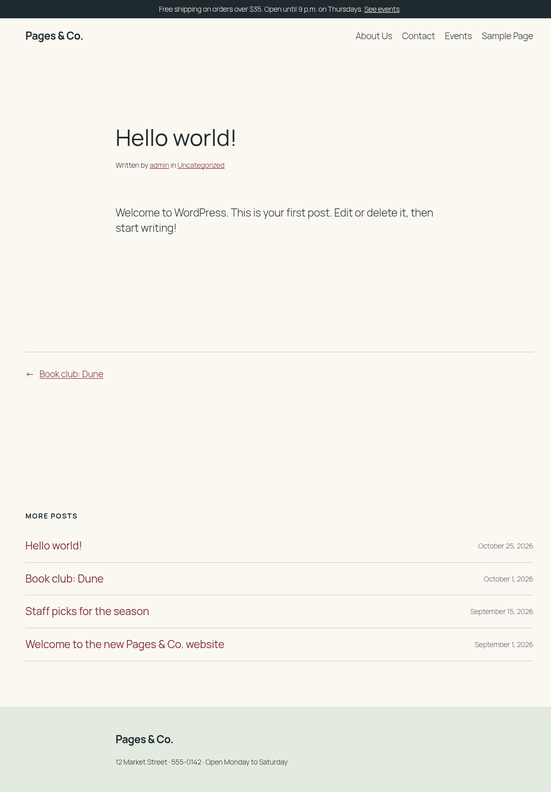

🧒 Lesson 3.4: Child Themes & Customizing Existing Themes
Most client sites do not run a theme you wrote. They run Twenty Twenty-Five, or a theme they bought, and they want "just a few changes". If you edit that theme's files, the next update wipes your work. A child theme is the professional answer: a small theme that holds only your changes and borrows everything else from its parent. In this lesson you build one for Twenty Twenty-Five in the Pages & Co. colors, override its theme.json, a template and a pattern, give it a functions.php, see how classic child themes differ, and then switch the shop back to its own theme.
🎯 Learning Objectives
By the end of this lesson, you will be able to:
- Create and activate a child theme with the
Templateheader, and explain thetemplateandstylesheetoptions it sets - Predict how a child's
theme.json, templates, template parts, patterns and style variations combine with the parent's - Use a child
functions.phpto enqueue the child's stylesheet, replace a pluggable parent function and remove a parent hook at the right time - Build a classic child theme and explain how
get_stylesheet_directory(),get_template_directory()andlocate_template()choose files - Choose between the Site Editor, a child theme, your own theme and a plugin for a requested change
In This Lesson
🤔 Why Child Themes Exist
In Lesson 1.1 you saw the rule "never edit core", and the same holds for themes you did not write. A theme update replaces the theme's whole folder: WordPress downloads the new version and swaps it in, with no idea that you changed templates/single.html last month. Your change is simply gone. A theme sold on a marketplace or listed in the WordPress.org directory is updated this way, and so is Twenty Twenty-Five.
A child theme avoids that. It is a separate theme folder that names another theme as its parent. When WordPress needs a file, it looks in the child first and falls back to the parent. You put only your changes in the child; the parent stays untouched and can be updated safely.
💡 Mental model: tracing paper over a floor plan
Picture the parent theme as an architect's printed floor plan. You lay a sheet of tracing paper on top and draw only what you want different: a wall moved, a door added. Anyone looking at the stack sees the combined plan. When the architect sends a revised plan, you slide your tracing paper onto the new print, and your changes are still there. The child theme is the tracing paper: small, separate, and only meaningful on top of its parent.
"Looks in the child first" works a little differently for each kind of file. You will see each row of this table on your site in this lesson:
| Parent's | With a child theme |
|---|---|
style.css | The child's header replaces it (name, version). Whether the child's CSS is loaded is up to functions.php |
theme.json | Merged: the child's settings and styles are layered over the parent's |
templates/*.html, parts/*.html | A child file with the same name replaces the parent's; the rest are inherited |
patterns/*.php | Both are registered; a child pattern with the same slug wins |
styles/*.json | Inherited; a child file with the same file name replaces the parent's |
functions.php | Both run, the child's first |
Classic PHP templates (header.php, single.php…) | A child file with the same name replaces the parent's |
🌱 The Smallest Child Theme
A child theme needs one file: style.css with a Template line naming the parent's folder (not its display name). Create wordpress/wp-content/themes/pagesco-tt5-child/style.css:
/*
Theme Name: Pages & Co. TT5 Child
Theme URI: https://example.com/pagesco-tt5-child/
Author: Pages & Co.
Author URI: https://example.com/
Description: A child theme of Twenty Twenty-Five in the Pages & Co. colors.
Template: twentytwentyfive
Requires at least: 6.7
Tested up to: 7.1
Requires PHP: 7.4
Version: 1.0.0
License: GNU General Public License v2 or later
License URI: http://www.gnu.org/licenses/gpl-2.0.html
Text Domain: pagesco-tt5-child
*/Compared with the pagesco header from Lesson 3.2, two lines matter. Template: twentytwentyfive makes it a child of Twenty Twenty-Five. Text Domain is the child's own folder name, for the child's own strings. Requires at least: 6.7 matches the parent's own requirement (a child cannot run where its parent cannot). Activate it and ask WordPress what changed:
wp theme activate pagesco-tt5-child
wp option get template
wp option get stylesheet
wp theme list --fields=name,status,versionOutput
Success: Switched to 'Pages & Co. TT5 Child' theme.
twentytwentyfive
pagesco-tt5-child
+-------------------+----------+---------+
| name | status | version |
+-------------------+----------+---------+
| pagesco-tt5-child | active | 1.0.0 |
| pagesco | inactive | 1.0.0 |
| twentytwentyfive | parent | 1.5 |
| twentytwentyfour | inactive | 1.6 |
| twentytwentythree | inactive | 1.7 |
+-------------------+----------+---------+These are the two options Lesson 3.1 pointed out. Normally both hold the same folder name; with a child theme active, template is the parent (where the templates and code come from) and stylesheet is the child (the theme whose style.css header names the site's theme). wp theme list gives the parent the status parent. In PHP, each option has its own directory function:
wp eval 'echo get_template_directory(), "\n", get_stylesheet_directory(), "\n"; var_dump( is_child_theme(), wp_is_block_theme() );'Output
/var/www/html/wp-content/themes/twentytwentyfive
/var/www/html/wp-content/themes/pagesco-tt5-child
bool(true)
bool(true)| Function | Returns, with a child theme active |
|---|---|
get_template_directory() / _uri() | The parent's folder: path / URL |
get_stylesheet_directory() / _uri() | The child's folder |
get_stylesheet_uri() | The child's style.css URL |
get_theme_file_path( $file ) / get_theme_file_uri() | The child's copy of $file if it exists, else the parent's (you used get_theme_file_uri() in Lesson 3.3's hero) |
get_parent_theme_file_path() / _uri() | Always the parent's copy |
Without a child theme the pairs return the same folder, which is why classic tutorials that mix them up seem to work until someone makes a child theme. Open http://localhost:8080/: it is Twenty Twenty-Five, unchanged, with your store notice at the top (Lesson 2.3's must-use plugin does not care which theme is active) and Twenty Twenty-Five's demo footer at the bottom, links to "FAQs" and "Authors" pages the shop does not have and all.
http://localhost:8080/ (the visible text, shortened)Output
Free shipping on orders over $35. Open until 9 p.m. on Thursdays. See events
Skip to content
Pages & Co.
About Us
Contact
Events
Sample Page
Blog
Hello world!
...
Themes
Twenty Twenty-Five
Designed with WordPress🎨 theme.json: Merged, Not Replaced
The shop wants Twenty Twenty-Five in its own colors. Twenty Twenty-Five names its colors by role (Lesson 3.3): base (page), contrast (text) and accent-1 to accent-6, used throughout its templates and patterns. Keep the slugs and change the values. Create pagesco-tt5-child/theme.json:
{
"$schema": "https://schemas.wp.org/wp/7.1/theme.json",
"version": 3,
"settings": {
"color": {
"palette": [
{ "slug": "base", "name": "Paper", "color": "#fbf8f1" },
{ "slug": "contrast", "name": "Ink", "color": "#1f2a2e" },
{ "slug": "accent-1", "name": "Sage", "color": "#e3eadf" },
{ "slug": "accent-2", "name": "Sand", "color": "#ece3d4" },
{ "slug": "accent-3", "name": "Oxblood", "color": "#7a2e2e" },
{ "slug": "accent-4", "name": "Slate", "color": "#56636a" },
{ "slug": "accent-5", "name": "Cream", "color": "#f4efe3" },
{ "slug": "accent-6", "name": "Ink 20%", "color": "color-mix(in srgb, currentColor 20%, transparent)" }
]
}
},
"styles": {
"elements": {
"link": {
"color": { "text": "var:preset|color|accent-3" }
}
}
}
}The child's theme.json is a layer between the parent's and the user's (Lesson 3.3's three layers become four: core, parent, child, user). What happens depends on the kind of value:
- Single values are merged key by key. The child sets only
styles.elements.link.color; the parent's link underline, its body font (Manrope), its font sizes and everything else stay. - Preset lists are replaced as a whole. The child's
palettereplaces the parent's complete palette, so the child repeats all eight slugs, includingaccent-6with Twenty Twenty-Five's own value. Leave one out and it is gone (Common Mistakes, number 2).
curl -s http://localhost:8080/ | grep -o -- '--wp--preset--color--\(base\|contrast\|accent-[0-9]\): [^;]*'
curl -s http://localhost:8080/ | grep -o 'a:where(:not(.wp-element-button)){[^}]*}\|body{[^}]*font-family[^;]*'Output
--wp--preset--color--base: #fbf8f1
--wp--preset--color--contrast: #1f2a2e
--wp--preset--color--accent-1: #e3eadf
--wp--preset--color--accent-2: #ece3d4
--wp--preset--color--accent-3: #7a2e2e
--wp--preset--color--accent-4: #56636a
--wp--preset--color--accent-5: #f4efe3
--wp--preset--color--accent-6: color-mix(in srgb, currentColor 20%, transparent)
body{background-color: var(--wp--preset--color--base);color: var(--wp--preset--color--contrast);font-family: var(--wp--preset--font-family--manrope)
a:where(:not(.wp-element-button)){color: var(--wp--preset--color--accent-3);}The shop's colors in Twenty Twenty-Five's slots, links in oxblood, and the body still in the parent's Manrope. The child also inherits the parent's style variations: Styles > Browse styles still offers Evening, Noon, Dusk and the rest, because a child sees the parent's styles/ folder (a child file with the same name would replace one, Exercise 4). The resolver counts every JSON file without blockTypes: Twenty Twenty-Five's 8 full variations, 8 color-only and 7 typography-only ones.
wp eval 'echo count( WP_Theme_JSON_Resolver::get_style_variations() ), " variations, first: ", WP_Theme_JSON_Resolver::get_style_variations()[0]["title"], "\n";'Output
23 variations, first: Evening📐 Templates, Parts and Patterns
Pages & Co. does not use comments, and Twenty Twenty-Five's single post template ends with a comments section. Overriding a template is "copy, then change only what you need": copy the parent's templates/single.html into the child and delete the comments line. With sed that is one command (from the WP-CLI container; in your editor, copy the file and delete the line <!-- wp:pattern {"slug":"twentytwentyfive/comments"} /-->):
curl -s http://localhost:8080/hello-world/ | grep -c 'wp-block-comments'
mkdir -p wp-content/themes/pagesco-tt5-child/templates
sed '/twentytwentyfive\/comments/d' wp-content/themes/twentytwentyfive/templates/single.html > wp-content/themes/pagesco-tt5-child/templates/single.html
curl -s http://localhost:8080/hello-world/ | grep -c 'wp-block-comments'Output
4
0(The last grep -c prints 0 and exits with status 1.) Which file did WordPress use for each template? get_block_templates() names every template after the active theme, so it cannot tell you; core's internal _get_block_template_file() can (internal, so use it for checking, not in your theme's code):
wp eval 'foreach ( array( "single", "index" ) as $slug ) { echo _get_block_template_file( "wp_template", $slug )["path"], "\n"; }'Output
/var/www/html/wp-content/themes/pagesco-tt5-child/templates/single.html
/var/www/html/wp-content/themes/twentytwentyfive/templates/index.htmlsingle comes from the child, index from the parent. Template parts work the same way: a child parts/footer.html would replace the parent's. The template hierarchy from Lesson 3.1 is checked in both folders for each candidate: for a page, WordPress looks for page-about.html in the child, then in the parent, before it moves on to page.html.
⚠️ An overridden template stops receiving updates
From now on, if a Twenty Twenty-Five update improves single.html, your site will not see it: your copy wins. That is the price of overriding a whole file, so override as little as possible, and when the parent updates, compare its new file with your copy (diff is enough). Smaller tools come first: a theme.json style, a pattern override, a hook.
Overriding a pattern by slug
Twenty Twenty-Five's footer part contains nothing but one line, <!-- wp:pattern {"slug":"twentytwentyfive/footer"} /-->; the design is in the pattern. When a child theme registers a pattern with the same slug as a parent's pattern, the child's wins (core registers the child's patterns first and skips any slug already registered). So you can replace the footer without touching the template part, which keeps the part, and everything that uses it, the parent's. You write that pattern in the project.
⚙️ functions.php in a Child Theme
First, a surprise that catches almost everyone. Add a rule to the child's style.css (append it below the header):
/* The store notice from the pagesco-site must-use plugin (Lesson 2.3), in the shop's colors. */
.pagesco-notice {
background: var(--wp--preset--color--contrast);
color: var(--wp--preset--color--base);
font-size: var(--wp--preset--font-size--small);
padding: 0.5rem 1rem;
text-align: center;
}
.pagesco-notice a {
color: inherit;
}curl -s http://localhost:8080/ | grep -c 'pagesco-tt5-child/style.css'Output
0The page never loads it. A block theme's style.css is a header file first; WordPress loads a theme's CSS only when functions.php enqueues it (Lesson 3.2's FAQ). Twenty Twenty-Five enqueues its own stylesheet with get_parent_theme_file_uri(), so the child's is ignored. Give the child a functions.php that enqueues it, with the parent's handle as a dependency so the child's rules come later and win ties:
<?php
/**
* Pages & Co. TT5 Child functions and definitions.
*
* @package pagesco-tt5-child
*/
/**
* Loads the child theme's style.css after the parent's styles.
*/
function pagesco_tt5_child_enqueue_styles() {
wp_enqueue_style(
'pagesco-tt5-child-style',
get_stylesheet_uri(),
array( 'twentytwentyfive-style' ),
wp_get_theme()->get( 'Version' )
);
}
add_action( 'wp_enqueue_scripts', 'pagesco_tt5_child_enqueue_styles' );curl -s http://localhost:8080/ | grep -o "<link rel='stylesheet' id='pagesco-tt5-child-style-css'[^>]*>\|<style id=\"twentytwentyfive-style-inline-css\">"Output
<style id="twentytwentyfive-style-inline-css">
<link rel='stylesheet' id='pagesco-tt5-child-style-css' href='http://localhost:8080/wp-content/themes/pagesco-tt5-child/style.css?ver=1.0.0' media='all' />The parent's stylesheet arrives inlined in a <style> element (it is small, and WordPress inlines small stylesheets that declare their file path, as Twenty Twenty-Five does with wp_style_add_data( …, 'path', … )), and the child's comes after it as a normal <link>, with the child's Version as ?ver= (Lesson 4.3 covers enqueueing and versions in depth). Functions in the child use the child's prefix, pagesco_tt5_child_, like any other code (Lesson 1.3).
✅ CSS in a block child theme: theme.json first
For a few rules, a block child theme can skip the stylesheet entirely and put them in theme.json's styles.css string, as pagesco does for the notice (Lesson 3.2). Use an enqueued style.css when the CSS grows beyond a few lines or needs comments and structure, as here.
Load order: the child goes first
Both functions.php files run, and the order matters. List the theme files PHP has loaded:
wp eval 'foreach ( get_included_files() as $f ) { if ( str_contains( $f, "/themes/" ) ) { echo $f, "\n"; } }'Output
/var/www/html/wp-content/themes/pagesco-tt5-child/functions.php
/var/www/html/wp-content/themes/twentytwentyfive/functions.phpThe child's functions.php is loaded before the parent's (wp-settings.php loads the stylesheet directory, then the template directory, Lesson 2.2's load order). Two consequences follow, and you will use both in the project:
- Pluggable functions. Twenty Twenty-Five wraps every function in
if ( ! function_exists( 'twentytwentyfive_post_format_setup' ) )(Lesson 3.1). If the child defines a function with that name first, the parent skips its own: the child's version replaces it. Only functions written this way can be replaced; defining any other parent function in the child is a fatal "Cannot redeclare" error (Lesson 1.3). - Removing parent hooks needs good timing. When the child's file runs, the parent has not added its hooks yet, so a
remove_action()at the top of the child's file has nothing to remove (Common Mistakes, number 3). Remove parent hooks from a callback onafter_setup_theme, which fires after both files have loaded (Lesson 2.3's hook order).
🏛️ Classic Child Themes
Many client sites run classic themes, so you need the classic version too. The idea is identical; the files are PHP templates instead of block markup. To try it you need a classic parent. Twenty Twenty-One is the last classic default theme; WP-CLI downloads it from WordPress.org (this needs an internet connection):
wp theme install twentytwentyoneOutput (your version number may differ)
Installing Twenty Twenty-One (2.9)
Downloading installation package from https://downloads.wordpress.org/theme/twentytwentyone.2.9.zip...
Unpacking the package...
Installing the theme...
Theme installed successfully.
Success: Installed 1 of 1 themes.A practice child for it needs the same two files. style.css:
/*
Theme Name: Pages & Co. TT21 Child
Template: twentytwentyone
Version: 1.0.0
Text Domain: pagesco-tt21-child
*/
body {
--global--color-primary: #7a2e2e;
}And functions.php. Twenty Twenty-One enqueues its own stylesheet with get_template_directory_uri() (the parent), so the child enqueues its own with the parent's handle as a dependency, the same pattern as the block child:
<?php
/**
* Pages & Co. TT21 Child: a practice classic child theme.
*
* @package pagesco-tt21-child
*/
/**
* Loads the child's style.css after the parent's.
*/
function pagesco_tt21_child_enqueue_styles() {
wp_enqueue_style(
'pagesco-tt21-child-style',
get_stylesheet_uri(),
array( 'twenty-twenty-one-style' ),
wp_get_theme()->get( 'Version' )
);
}
add_action( 'wp_enqueue_scripts', 'pagesco_tt21_child_enqueue_styles' );wp theme activate pagesco-tt21-child
curl -s http://localhost:8080/ | grep -o "<link rel='stylesheet' id='\(twenty-twenty-one-style\|pagesco-tt21-child-style\)-css'[^>]*>" | sed 's/?ver=[0-9.]*/?ver=…/'Output
Success: Switched to 'Pages & Co. TT21 Child' theme.
<link rel='stylesheet' id='twenty-twenty-one-style-css' href='http://localhost:8080/wp-content/themes/twentytwentyone/style.css?ver=…' media='all' />
<link rel='stylesheet' id='pagesco-tt21-child-style-css' href='http://localhost:8080/wp-content/themes/pagesco-tt21-child/style.css?ver=…' media='all' />Parent first, child second. (The sed hides the version numbers, which change with each Twenty Twenty-One release.) You may meet old tutorials that load the parent's CSS with @import url("../twentytwentyone/style.css"); at the top of the child's style.css: that is outdated, because @import loads the files one after the other and slows the page down. Enqueue instead.
Template files are found by locate_template(), which checks the child's folder, then the parent's. Classic templates load their pieces through it (get_header(), get_footer(), get_template_part(); Lesson 4.1 uses them). Watch it switch when the child gets its own footer.php:
wp eval 'echo locate_template( "footer.php" ), "\n";'
cp wp-content/themes/twentytwentyone/footer.php wp-content/themes/pagesco-tt21-child/
wp eval 'echo locate_template( "footer.php" ), "\n";'Output
/var/www/html/wp-content/themes/twentytwentyone/footer.php
/var/www/html/wp-content/themes/pagesco-tt21-child/footer.phpThat is the classic version of the template override you made with single.html, with the same warning: the copied footer.php no longer receives the parent's fixes. The practice is over; switch back to your block child and delete both classic themes (deleting needs the theme to be inactive):
wp theme activate pagesco-tt5-child
wp theme delete pagesco-tt21-child twentytwentyoneOutput
Success: Switched to 'Pages & Co. TT5 Child' theme.
Deleted 'pagesco-tt21-child' theme.
Deleted 'twentytwentyone' theme.
Success: Deleted 2 of 2 themes.💡 Grandchildren do not exist
WordPress supports one level: a child theme cannot be the parent of another child theme. If you need to customize a child theme someone else wrote, copy it into a new theme of your own (renaming its folder, header, text domain and prefixes), or add your changes through a plugin.
🧭 Which Tool for Which Change?
A child theme is one option among several. Clients describe what they want ("make the buttons red", "show the author box", "add a booking form"), not which tool to use, so learn to sort requests:
| Tool | Who changes it | Where it lives | Good for |
|---|---|---|---|
| Site Editor: Styles, templates, Additional CSS | The site owner | Database (wp_global_styles, wp_template) | Small visual changes the owner may want to change again |
| Child theme | A developer | Files, in Git (Lesson 8.4) | Lasting design changes to a theme you did not write |
| Your own theme (Lessons 3.2 and 3.3) | A developer | Files | When the changes outgrow the parent, or the design is truly the client's own |
| A plugin (Module 5) | A developer | Files | Features: anything that should survive a theme switch, such as post types, forms, the store notice |
The last row is the one most often gotten wrong. A child theme is still a theme: if the client switches themes in three years, everything in it disappears. That is why the store notice lives in a must-use plugin (Lesson 2.3) and why the Book post type goes into the pagesco-books plugin in Module 5, not into functions.php.
⚠️ Common Mistakes
1. A Template header that names the wrong folder
The parent's name is "Twenty Twenty-Five", but Template needs its folder, twentytwentyfive. Make a throwaway child with the wrong value:
/*
Theme Name: Pages & Co. Typo Child
Template: twenty-twenty-five
*/wp theme list --fields=name,status
wp theme activate pagesco-typo-childError
+-------------------+----------+
| name | status |
+-------------------+----------+
| pagesco-tt5-child | active |
| pagesco | inactive |
| twentytwentyfive | parent |
| twentytwentyfour | inactive |
| twentytwentythree | inactive |
+-------------------+----------+
Error: The parent theme is missing. Please install the "twenty-twenty-five" parent theme.What it means: WordPress could not find a theme folder named twenty-twenty-five, so it treats the child as broken and refuses to activate it: "The parent theme is missing. Please install the "twenty-twenty-five" parent theme." Note that wp theme list does not show the broken theme at all; Appearance > Themes lists it under Broken Themes with the same message. The same error appears if the parent really is not installed, which happens when a client uploads only the child theme. Fix: use the folder name (look in wp-content/themes/ or at wp theme list's name column), and install the parent first. Delete the practice folder:
rm -r wp-content/themes/pagesco-typo-child2. A partial palette in the child
You only want new base and contrast colors, so you list just those two in the child's palette. Keep a copy of the real file and try it:
cp wp-content/themes/pagesco-tt5-child/theme.json theme.json.bak
sed -i '/"slug": "accent-/d; s/"color": "#1f2a2e" },/"color": "#1f2a2e" }/' wp-content/themes/pagesco-tt5-child/theme.json
curl -s http://localhost:8080/ | grep -c -- '--wp--preset--color--accent-[0-9]: '
curl -s http://localhost:8080/ | grep -o 'var(--wp--preset--color--accent-[0-9])' | sort | uniq -cOutput
0
1 var(--wp--preset--color--accent-3)
3 var(--wp--preset--color--accent-4)What it means: the child's two-color palette replaced the parent's eight-color palette, so no accent custom property is defined any more, while the parent's styles still use them (the second command counts the uses on the home page; your link color, for one, now points at nothing). CSS ignores an undefined variable without a message, so those elements fall back to inherited or default colors, and in the editor the accent swatches vanish. Patterns that use accent backgrounds lose them. Fix: when you override a preset list, repeat every slug the parent uses, changing only the values. Restore the copy:
mv theme.json.bak wp-content/themes/pagesco-tt5-child/theme.json
curl -s http://localhost:8080/ | grep -c -- '--wp--preset--color--accent-[0-9]: 'Output
13. Removing a parent hook too early
The shop does not want Twenty Twenty-Five's "Checkmark" list style, which the parent registers in twentytwentyfive_block_styles() on init. You add the obvious line to the end of the child's functions.php, logging what remove_action() returns:
error_log( 'remove_action returned ' . var_export( remove_action( 'init', 'twentytwentyfive_block_styles' ), true ) );wp eval 'var_dump( WP_Block_Styles_Registry::get_instance()->is_registered( "core/list", "checkmark-list" ) );'
grep 'remove_action returned' wp-content/debug.log | tail -n 1Output (your timestamp will differ)
bool(true)
[25-Oct-2026 23:00:22 UTC] remove_action returned falseWhat it means: remove_action() returned false because there was nothing to remove yet: the child's file runs before the parent's, which adds the hook a moment later. The checkmark style is still registered, and no error says so, only the return value you logged (Lesson 2.3: remove_action() must run after the add_action() it undoes). Fix: wrap the removal in a function hooked to after_setup_theme. You do that in the project, replacing functions.php completely.
🛠️ Project: Finish pagesco-tt5-child
The child already has the shop's palette, a single.html without comments and a stylesheet for the notice. Finish it: the shop's footer, a complete functions.php, a check of everything, and then the switch back to pagesco. Allow about 40 minutes.
🛠️ Step 1: The shop's footer, by pattern override (10 min)
Create pagesco-tt5-child/patterns/footer.php with the parent footer pattern's slug, twentytwentyfive/footer. It uses the parent's presets (spacing 50, font size small) and the child's colors, and its text uses the child's text domain:
<?php
/**
* Title: Footer
* Slug: twentytwentyfive/footer
* Categories: footer
* Block Types: core/template-part/footer
* Description: The Pages & Co. footer: address and contact.
*
* @package pagesco-tt5-child
*/
?>
<!-- wp:group {"align":"full","style":{"spacing":{"padding":{"top":"var:preset|spacing|50","bottom":"var:preset|spacing|50"}}},"backgroundColor":"accent-1","layout":{"type":"constrained"}} -->
<div class="wp-block-group alignfull has-accent-1-background-color has-background" style="padding-top:var(--wp--preset--spacing--50);padding-bottom:var(--wp--preset--spacing--50)">
<!-- wp:site-title {"level":0} /-->
<!-- wp:paragraph {"fontSize":"small"} -->
<p class="has-small-font-size"><?php esc_html_e( '12 Market Street · 555-0142 · Open Monday to Saturday', 'pagesco-tt5-child' ); ?></p>
<!-- /wp:paragraph -->
</div>
<!-- /wp:group -->http://localhost:8080/ (the footer, as text)Output
Pages & Co.
12 Market Street · 555-0142 · Open Monday to SaturdayThe footer part still comes from the parent; only the pattern it shows is the child's. If Twenty Twenty-Five ever changes its parts/footer.html, your site receives that change.
🛠️ Step 2: The complete functions.php (12 min)
Replace functions.php (this also removes the logging line from Common Mistakes). It keeps the enqueue function, replaces the parent's pluggable post-format setup (the shop's news only uses asides and quotes), and removes the checkmark style at the right moment:
<?php
/**
* Pages & Co. TT5 Child functions and definitions.
*
* @package pagesco-tt5-child
*/
/**
* Loads the child theme's style.css after the parent's styles.
*/
function pagesco_tt5_child_enqueue_styles() {
wp_enqueue_style(
'pagesco-tt5-child-style',
get_stylesheet_uri(),
array( 'twentytwentyfive-style' ),
wp_get_theme()->get( 'Version' )
);
}
add_action( 'wp_enqueue_scripts', 'pagesco_tt5_child_enqueue_styles' );
/**
* Replaces the parent's post format support: the shop only uses asides and quotes.
*
* Twenty Twenty-Five wraps this function in function_exists(), and the child's
* functions.php loads first, so this definition wins.
*/
function twentytwentyfive_post_format_setup() {
add_theme_support( 'post-formats', array( 'aside', 'quote' ) );
}
/**
* Removes parent features the shop does not want.
*
* Runs on after_setup_theme, when the parent's functions.php has added its hooks.
*/
function pagesco_tt5_child_remove_parent_features() {
remove_action( 'init', 'twentytwentyfive_block_styles' );
}
add_action( 'after_setup_theme', 'pagesco_tt5_child_remove_parent_features' );wp eval 'print_r( get_theme_support( "post-formats" )[0] ); var_dump( WP_Block_Styles_Registry::get_instance()->is_registered( "core/list", "checkmark-list" ) );'Output
Array
(
[0] => aside
[1] => quote
)
bool(false)The post format list shrank to two, so the editor's Post Format menu now offers only Standard, Aside and Quote; and the checkmark style is gone from the list block's Styles panel.
🛠️ Step 3: Check the child theme (8 min)
One command per inheritance rule from the table at the top of the lesson:
cd wp-content/themes/pagesco-tt5-child && find . -type f | sort && cd - > /dev/null
echo "palette: $(curl -s http://localhost:8080/ | grep -o -- '--wp--preset--color--accent-3: [^;]*')"
echo "single from: $(wp eval 'echo _get_block_template_file( "wp_template", "single" )["theme"];')"
echo "comments on a post: $(curl -s http://localhost:8080/hello-world/ | grep -c 'wp-block-comments')"
echo "footer: $(curl -s http://localhost:8080/ | grep -o '12 Market Street[^<]*')"
echo "child CSS: $(curl -s http://localhost:8080/ | grep -c 'pagesco-tt5-child/style.css')"
echo "notice: $(curl -s http://localhost:8080/ | grep -c '<div class="pagesco-notice"')"Output
./functions.php
./patterns/footer.php
./style.css
./templates/single.html
./theme.json
palette: --wp--preset--color--accent-3: #7a2e2e
single from: pagesco-tt5-child
comments on a post: 0
footer: 12 Market Street · 555-0142 · Open Monday to Saturday
child CSS: 1
notice: 1Have a look in your browser too. Twenty Twenty-Five's layout and Manrope type, in the shop's colors, with the dark notice bar and the shop's footer:

pagesco-tt5-child: the parent's design, the child's colors, footer and template.🛠️ Step 4: Back to pagesco (5 min)
The child theme was the practice; Pages & Co. runs on its own theme. Switch back, leave the child installed (it is a handy reference for client work), and confirm that the front page from Lesson 3.3 is back:
wp theme activate pagesco
wp theme list --fields=name,status,version
curl -s http://localhost:8080/ | grep -o '<h1[^>]*>[^<]*'
wp post list --post_type=wp_template,wp_template_part,wp_global_styles --format=countOutput
Success: Switched to 'Pages & Co.' theme.
+-------------------+----------+---------+
| name | status | version |
+-------------------+----------+---------+
| pagesco-tt5-child | inactive | 1.0.0 |
| pagesco | active | 1.0.0 |
| twentytwentyfive | inactive | 1.5 |
| twentytwentyfour | inactive | 1.6 |
| twentytwentythree | inactive | 1.7 |
+-------------------+----------+---------+
<h1 class="wp-block-heading">Good books, good company
0Twenty Twenty-Five is plain inactive again, the child stays installed, and no Site Editor copies were created along the way.
✅ Project Completion Checklist
pagesco-tt5-child/holdsstyle.css,theme.json,functions.php,templates/single.htmlandpatterns/footer.php- With the child active, the site showed the shop's eight-color palette, oxblood links, the styled notice bar, the shop's footer and posts without comments
- The child's
functions.phpenqueues its stylesheet, replaces a pluggable parent function and removes a parent hook onafter_setup_theme - Twenty Twenty-One and the practice child themes are deleted
pagescois the active theme again, and the child theme is still installed- You added a line to
pagesco-plan.txt: "client sites on a ready-made theme: child theme"
🏋️ Hands-on Exercises
The exercises use the child theme, so each one starts by activating it. Every solution switches back to pagesco at the end; later lessons expect it active.
🏋️ Exercise 1: Child or Parent?
With the child active, predict what each of these returns, then check: get_theme_file_path( 'theme.json' ), get_theme_file_path( 'templates/index.html' ), get_parent_theme_file_path( 'theme.json' ) and get_stylesheet_uri().
💡 Hint
get_theme_file_path() returns the child's copy if the file exists there, else the parent's. The child has a theme.json but no templates/index.html.
✅ Solution
wp theme activate pagesco-tt5-child
wp eval 'echo get_theme_file_path( "theme.json" ), "\n", get_theme_file_path( "templates/index.html" ), "\n", get_parent_theme_file_path( "theme.json" ), "\n", get_stylesheet_uri(), "\n";'
wp theme activate pagescoOutput
Success: Switched to 'Pages & Co. TT5 Child' theme.
/var/www/html/wp-content/themes/pagesco-tt5-child/theme.json
/var/www/html/wp-content/themes/twentytwentyfive/templates/index.html
/var/www/html/wp-content/themes/twentytwentyfive/theme.json
http://localhost:8080/wp-content/themes/pagesco-tt5-child/style.css
Success: Switched to 'Pages & Co.' theme.This lookup is why Lesson 3.3's hero used get_theme_file_uri(): a child theme of pagesco could replace the image just by having its own assets/images/book-image.webp.
🏋️ Exercise 2: A Template the Parent Does Not Have
Child themes can add templates, not only replace them. Give the child a template for the About page only, using the hierarchy from Lesson 3.1: copy the parent's page.html and add a paragraph "Independent since the first page." right after the header part. Check that /about/ shows it and /contact/ does not, then remove it.
💡 Hint
The most specific page template by slug is page-about.html. Twenty Twenty-Five's page.html starts with <!-- wp:template-part {"slug":"header"} /-->; sed can add lines after it with the a\ command or a substitution.
✅ Solution
wp theme activate pagesco-tt5-child
sed 's|<!-- wp:template-part {"slug":"header"} /-->|&\n\n<!-- wp:paragraph -->\n<p>Independent since the first page.</p>\n<!-- /wp:paragraph -->|' wp-content/themes/twentytwentyfive/templates/page.html > wp-content/themes/pagesco-tt5-child/templates/page-about.html
curl -s http://localhost:8080/about/ | grep -c 'Independent since the first page.'
curl -s http://localhost:8080/contact/ | grep -c 'Independent since the first page.'Output
Success: Switched to 'Pages & Co. TT5 Child' theme.
1
0The About page found page-about.html in the child before it reached page.html in the parent. Remove it and switch back:
rm wp-content/themes/pagesco-tt5-child/templates/page-about.html
wp theme activate pagescoOutput
Success: Switched to 'Pages & Co.' theme.🏋️ Exercise 3: Which Tool? (No Code)
A client on Twenty Twenty-Five asks for five changes. For each, choose the Site Editor, a child theme, or a plugin, and say why: (a) a different shade of yellow for buttons, which they might change again in spring; (b) an "Opening hours" box on every product page that must survive a future redesign; (c) the post template without the "Written by" line, permanently, for all posts; (d) a booking form for author readings; (e) an extra 1 px border on all images, versioned with the rest of the developer's work.
💡 Hint
Ask two questions for each: who should be able to change it later, and should it survive a theme switch?
✅ Solution
(a) Site Editor, Styles: a visual choice the owner wants to keep changing. (b) Plugin (or a synced pattern if it is pure content): it must survive a redesign, so it cannot live in the theme. (c) Child theme: copy single.html and remove the twentytwentyfive/hidden-written-by pattern line, a lasting design change. (d) Plugin: a feature with data, forms and security (Module 5). (e) Child theme: a styles.blocks rule in its theme.json (or its stylesheet), kept in Git. Reasonable people may answer (a) or (e) differently; what matters is that you can say who owns the change.
🏋️ Exercise 4: Override a Parent Style Variation (Stretch)
Twenty Twenty-Five's styles/01-evening.json is one of the variations your child inherits. Make the child's own version of it, titled "Evening at Pages & Co." and using the parent file's settings, then check how many variations the child now offers and what the first one is called. Is the count what you expected? Remove the file afterwards.
💡 Hint
A child file with the same file name (styles/01-evening.json) replaces the parent's. Start from a copy of the parent file and change its "title" with sed. List titles with WP_Theme_JSON_Resolver::get_style_variations().
✅ Solution
wp theme activate pagesco-tt5-child
mkdir -p wp-content/themes/pagesco-tt5-child/styles
sed 's/"title": "Evening"/"title": "Evening at Pages \& Co."/' wp-content/themes/twentytwentyfive/styles/01-evening.json > wp-content/themes/pagesco-tt5-child/styles/01-evening.json
wp eval '$v = WP_Theme_JSON_Resolver::get_style_variations(); echo count( $v ), " variations, first: ", $v[0]["title"], "\n";'
rm -r wp-content/themes/pagesco-tt5-child/styles
wp theme activate pagescoOutput
Success: Switched to 'Pages & Co. TT5 Child' theme.
22 variations, first: Evening at Pages & Co.
Success: Switched to 'Pages & Co.' theme.The first entry is now yours, but the count dropped from 23 to 22. WordPress compares file names only, ignoring folders, and Twenty Twenty-Five has two files called 01-evening.json: the full variation in styles/ and the color-only one in styles/colors/. Your child file replaced both. Reading core's code (here WP_Theme_JSON_Resolver::get_style_variations()) is how you find surprises like this; when you override a parent's variation, use the same subfolder and check the list afterwards.
🎯 Quick Quiz
🎯 Check Your Understanding
Question 1: A child theme of Twenty Twenty-Five is active. Which value does wp option get template print?
Question 2: The child's theme.json sets only styles.elements.link.color. What happens to the parent's body font?
Question 3: This line is at the top level of a child theme's functions.php. What does it return?
remove_action( 'wp_enqueue_scripts', 'twentytwentyfive_enqueue_styles' );Question 4: You want a different footer on a Twenty Twenty-Five child theme and keep as much of the parent as possible. What is the smallest override?
Question 5: A client wants a "Book a reading" form, and their site runs a child theme you built. Where should the form go?
❓ Common Questions at This Stage
Should I make a child theme of my own theme, pagesco?
No. A child theme protects your changes from someone else's updates. You control pagesco, so you change it directly and keep it in Git. A child of your theme makes sense only if you sell or share the parent and one client needs a variation of it.
What happens to Site Editor changes when I switch to a child theme?
They stay behind. Site Editor copies and global styles are stored per theme (the templates are named twentytwentyfive//single, the styles post wp-global-styles-twentytwentyfive), so a child starts clean. If the owner customized the parent in the Site Editor first, export those changes (Lesson 3.3) and move them into the child's files.
Can I use the Create Block Theme plugin to make a child theme?
Yes: it can create a child of the active theme, including your Site Editor changes. It is a good starting point; the files it writes are the same kinds you wrote by hand in this lesson, so you can read and maintain them.
Is a child theme slower?
Barely: WordPress checks one more folder for each file and runs one more functions.php. An extra stylesheet is one more request, which is another reason to keep small CSS in theme.json. Lesson 8.2 measures what really costs time.
🌟 Going Further: Bonus Challenge
Twenty Twenty-Five's single post template includes the pattern twentytwentyfive/hidden-written-by ("Written by … in …"). Without copying single.html again, change that line on every post to "Posted by … in the … section" by overriding only the pattern in your child theme. Open the parent's patterns/hidden-written-by.php first: it uses its own text domain and esc_html_e(); which text domain should your copy use, and why?
📓 Learning Journal
Take five minutes to write in your learning journal (a notebook or a plain text file works fine). Jot down:
- Key concepts you learned today
- Techniques that clicked (and the ones that have not, yet)
- Questions or confusion to bring to the next session
- Ideas to try on your own
- Progress and feelings: how did this lesson go for you?
✍️ This lesson's prompt: Imagine a client on Twenty Twenty-Five whose previous developer edited the theme's files directly. The next update is waiting. Write the steps you would take, in order, to move their changes into a child theme without losing anything. Which of today's commands (diff, _get_block_template_file(), wp theme list) would you use, and where?
📝 Lesson Summary
🎓 Key Takeaways
- A child theme is a
style.csswithTemplate: parent-folder; thetemplateoption holds the parent,stylesheetthe child - The child's
theme.jsonis merged over the parent's, but preset lists such as the palette are replaced whole - Child templates, parts and classic PHP templates replace the parent's files of the same name; child patterns replace parent patterns with the same slug
- Both
functions.phpfiles run, the child's first: pluggable parent functions can be replaced, and parent hooks are removed onafter_setup_theme - The child's
style.cssis loaded only iffunctions.phpenqueues it - Features belong in plugins; a child theme disappears with a theme switch
| You want | Write |
|---|---|
| Make a child theme | Template: twentytwentyfive in the child's style.css |
| Load the child's CSS | wp_enqueue_style( 'pagesco-tt5-child-style', get_stylesheet_uri(), array( 'twentytwentyfive-style' ) ) |
| A file from the child, else the parent | get_theme_file_path( $file ) / get_theme_file_uri( $file ) |
| Always the parent's file | get_parent_theme_file_path( $file ) |
| Replace a parent template | same file name in the child's templates/ |
| Replace a parent pattern | same Slug: in the child's patterns/ |
| Remove a parent hook | remove_action() inside a callback on after_setup_theme |
🏆 What You've Accomplished
- You built
pagesco-tt5-child: Twenty Twenty-Five in the shop's colors, with its own footer, single template and functions - You saw each inheritance rule on a real site and broke three of them on purpose
- You built a classic child theme and watched
locate_template()choose the child's file - You can decide whether a change belongs in the Site Editor, a child theme, your own theme or a plugin
🔭 Looking Ahead
Module 3 is complete: you can build, extend and customize block themes. In Lesson 4.1: The Loop & Template Tags you step into the classic theme world you glimpsed with Twenty Twenty-One: you build pagesco-classic, a classic theme with PHP templates, and learn the Loop and the template tags that power most existing WordPress sites, and that still run underneath every Query Loop block.
📋 Before the Next Lesson
- Make sure
pagescois the active theme andpagesco-tt5-childis installed but inactive - Check that Twenty Twenty-One is deleted (
wp theme list); Lesson 4.1 builds its own classic theme - Look at the source of any WordPress site you use and find its theme folder name in a
/wp-content/themes/…URL; is it a child theme?
🌱 Encouragement for the Journey
Four lessons ago a theme was a mystery folder. Now you can write one from scratch, give it patterns and variations, and customize someone else's without fear of the next update. That last skill is the one clients pay for most often, because almost every site you inherit runs a theme you did not write. Be patient with the "who loads first" rules; you will look them up a few more times, and that is exactly how professionals learn them.